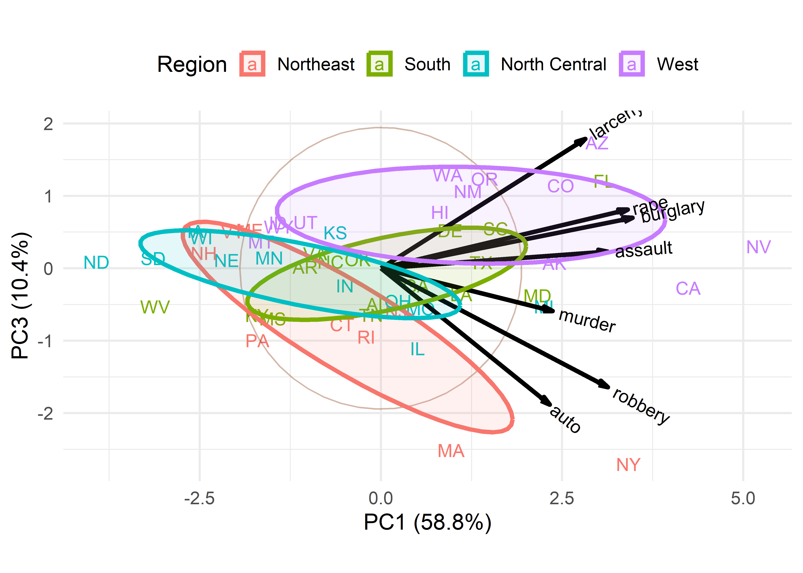
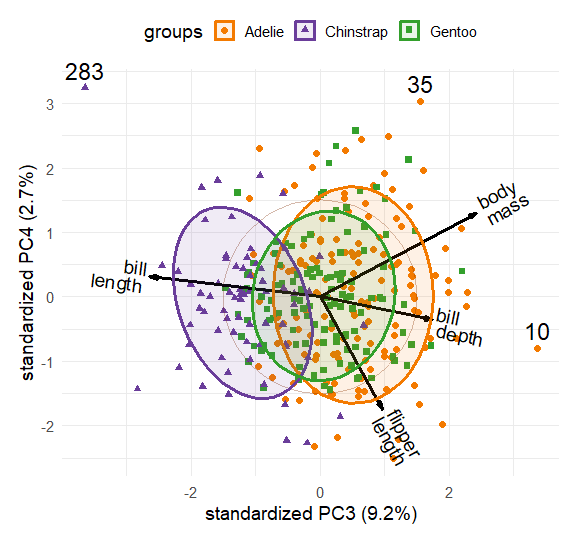
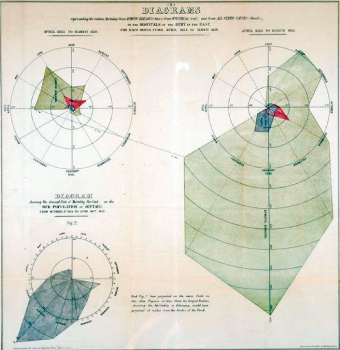
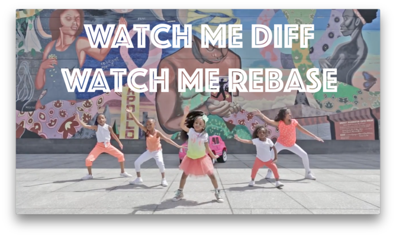
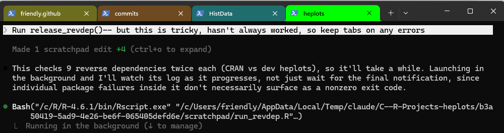
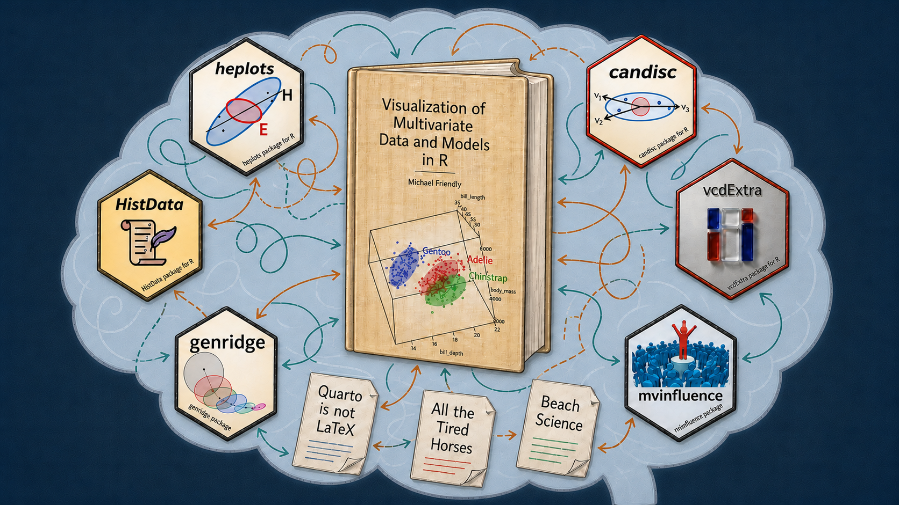

%%{init: {"flowchart": {"curve": "linear", "nodeSpacing": 22, "rankSpacing": 38}, "themeCSS": ".stage { filter: drop-shadow(2px 3px 2px #b8c2c2); }"}}%%
flowchart LR
writing([Writing]) --> idea([Graphic idea]) --> implement([Implement in<br/>software]) --> illustrate([Illustrate with<br/>example]) --> explain([Explain])
classDef stage fill:#d7eeee,stroke:#276b6b,stroke-width:1.5px,color:#173f3f;
class writing,idea,implement,illustrate,explain stage;
All the Tired Horses
How Am I Supposed to Get Any Writing Done? The Curses and Blessings of Writing While Developing and Researching
writing
workflow
R packages
attention
Writing technical, code-dependent material usually pulls you into necessary detours – fixing a package, chasing a citation, syncing across machines, juggling AI sessions – and each detour can spawn its own. A cognitive look at where the friction actually comes from.
🎵 All the tired horses in the sun
How’m I supposed to get any riding done?
Mm-mm, mm-mm 🎵— Bob Dylan, 1970
The Writing Process
When I write, my subconscious often thinks about the writing process: what it takes to “Get Some Writing Done”. It’s not simply about putting words down on a page, or typing them into an editor or word processor window. Your cognitive focus (your attention) on the task often has to deal with interruptions in the flow of ideas → tasks-to-do → final product. The interruptions are like Bob Dylan’s Wild Horses; they are detours along the path to getting it on the path draft → done → DONE → FINALLY DONE!!!.
Over the years that’s meant for me writing journal articles on novel graphical methods, the history of data visualization, also book projects, and, now, this blog. This body of work– and what I had to do to “Get some writing done”– is all a happy cognitive family, all alike in some ways, the way siblings share a last name and a few mannerisms. In writing, they call on the same high-level core cognitive skills: organizing an argument, drafting, revising, cutting what doesn’t earn its place.
But each type of writing is unhappy, or at least difficult, in its own particular way – an article has to survive reviewers looking for the hole in it, a book has to hold together across three hundred pages and eighteen months, a blog post has to earn the reader’s attention in the first paragraph or lose it.
But more to my main point, each form of writing in my work involves a somewhat different cognitive skill-set, and often different set of software tools, each one a new wild horse needing to be tamed (understood) and put to work.1 From a cognitive perspective, this falls within the span of understanding attention mechanisms: what are the constraints? how to solve them? From a CS perspective, that can be construed as just a “workflow” problem hiding inside what looks like a writing problem. Both of these aspects are the real subject of what follows.
In this “thinking-about-my-writing-thinking”, I’m drawn to John McPhee’s Draft No. 4: On the Writing Process. It is the best book-length treatment I know of behind this same restlessness and occasional frustration about how writing actually gets done. It takes different shapes in various modes of expression, but there are striking similarities. It’s about the tension and friction to move your writing (and software, graphics) closer to what satisfies you as work well done and can be proud of.
The core skills are probably fine for fiction or non-technical non-fiction. But, as in my Vis-MLM book, and others before it (e.g., Discrete Data Analysis with R), I can’t help but think about the graphical methods I use for data analysis and see how they actually work in the context I’m writing about.
Usually, I can just recall how I did this before, or find a new package that does it better. The latter involves a small detour: install the package, read the documentation, understand how to use it, incorporate into my writing and workflow.
But often in this work I have to also wear a Developer hat, because these methods are new or existing ones suck: they don’t allow me to do what I want to write about. This mean implementing and testing them, writing documentation, publishing to CRAN before I get back to “real work” and actually use them in my working draft – this writing process is never just “writing”. It’s more like a path of stages, perhaps looping backwards:
Except it isn’t really a straight line at all. Every stage loops back, usually to “implement” and often all the way back to “writing” itself, because what the software actually does doesn’t match what you wanted to show. Think of each loop-back as a detour sign on the road from idea to finished post. This one has four of them.
%%{init: {"flowchart": {"curve": "basis", "nodeSpacing": 25, "rankSpacing": 55}, "themeCSS": ".stage { filter: drop-shadow(2px 3px 2px #b8c2c2); }"}}%%
flowchart LR
writing([Writing]) --> idea([Graphic idea]) --> implement([Implement in<br/>software]) --> illustrate([Illustrate with<br/>example]) --> explain([Explain])
idea ==> writing
implement ==> writing
illustrate ==> implement
explain ==> implement
classDef stage fill:#d7eeee,stroke:#276b6b,stroke-width:1.5px,color:#173f3f;
class writing,idea,implement,illustrate,explain stage;
linkStyle 4,5,6,7 stroke:#b04a3f,stroke-width:3px;
🚧 Detour 1 — BRIDGE OUT: when the software doesn’t do what you need
Most of the time the loop closes quietly – existing packages do what you need, you make the figure, you move on. Vis-MLM wasn’t like that. Working up examples for the book meant a lot of these breaks from the actual writing, and sometimes the break had a second break nested inside it: one of my packages, or someone else’s, turned out to have a limitation, or worse, a bug. Then there’s a decision to make:
- track down my or their code;
- discover where it was wrong or could be made more general;
- fix it myself (then re-build the package, …) vs. file an issue or PR for the package author (and wait for follow-up).
ggbiplot: The Fork Taken

ggbiplot of the crime data, grouping the states by region and adding data ellipses.The clearest example is ggbiplot. Biplots show a 2D view of \(n\)-dimensional data in a single display, observations and variables together – exactly the kind of thing that shows up constantly in the book. The existing package didn’t do quite what I needed, so I forked it, extended it to produce the plots I actually wanted, and eventually negotiated with the original author to merge the work in and take over as maintainer. What started as “make one figure for one chapter” ended as an ongoing maintenance commitment. That’s the shape of this kind of detour: it doesn’t stay the size it started at.
tinyplot: A Road Not Taken
In Vis-MLM, I’ve been somewhat graphic-core-agnostic: I use both base R graphics included in my packages, and notably the excellent car package for its rich linear model graphics, but also ggplot2-based methods which I generally prefer for its coherent structure and extensibility. However, base R graphics are still a considerable chore for things I want to do, but are quite awkward— small things like composing a legend with different point symbols and colors. To plot points colored and shaped by group, you build the col and pch values passed to plot() by indexing a small vector with the grouping factor – and then repeat the same two vectors, in the same order but without indexing, to build the legend by hand:
grp <- factor(iris$Species)
clr <- c("steelblue", "darkorange", "forestgreen")
pch <- c(16, 17, 15)
plot(iris$Sepal.Length, iris$Sepal.Width,
col = clr[grp], pch = pch[grp],
xlab = "Sepal Length", ylab = "Sepal Width")
legend("topright", legend = levels(grp), col = clr, pch = pch)Get the order of levels(grp) wrong relative to clr/pch and the legend quietly lies about which color goes with which group.
About half-way through writing, a new base-R kid arrived on the block: tinyplot, a lightweight, zero-dependency alternative from Grant McDermott that offers automatic grouping (y ~ x | group), easy built-in legends, built-in themes and small-multiples faceting akin to ggplot2. The tinyplot Gallery gives some sense of what it can do.
It is now nearly everything I could have wanted for the base-R graphics in the book, but alas too late to consider. This would have entailed revising roughly ~70 example scripts, and all the text across many chapters that used those. That detour would have set me back a long way, so I bid goodbye to that otherwise attractive road. That road will have to wait until a 2\(^{nd}\) edition.
Noteworthy Points: A Path Delayed

A smaller but more consequential example is the idea of a general mechanism for flagging and labeling “noteworthy” observations in a fitted model or a graphic display – outliers, large residuals, influential points, and so on – often crucial to understanding and explaining what a plot is showing.
You get a hint of this already in the diagnostic panels produced by plot(lm(y ~ x1 + x2 + ...)), where unusual points get automatically labeled by case name (but only if your data frame actually has rownames()). plot.lm() isn’t beautiful, but it gets the job done and you don’t have to think much about it, other than select which plot types to show, and the id.n number of points to identify.
This facility is one of the most endearing aspects of the car package. Its plotting functions – scatterplot(), residualPlots(), influencePlot(), and others – all accept an id = list(n=, method=, ...) argument that handles this consistently. method= can be "x" or "y" (the points furthest from the mean of that coordinate), "r" (furthest from zero, as in a residual plot), "mahal" (furthest from the bivariate centroid by Mahalanobis distance), or your own numeric vector – Cook’s distance, say – with the largest n values labeled.
None of that existed for ggplot2, though. Finding and labeling unusual points is another data step and geom_*() you have to wire up yourself, one plot at a time – every single time! And worse: because I generally want to explain to the reader how such plots are constructed, so they can use them in their work, it takes another loop in the cognitive diagram Figure 2.
I wrote some code for this in heplots::noteworthy(), and its ggplot2 layer stat_noteworthy(). It ports the same vocabulary – "mahal", "x", "y", "r", or a Cook’s-distance-style numeric vector – into the grammar of graphics, so any ggplot, similar to car‘s own base-graphics functions, could get the same treatment. It’s been tested against peng, heplots’ Palmer-Penguins-style dataset, flagging multivariate outliers by Mahalanobis distance across the measured variables.
But getting this generally right– so it worked in situations with a grouping variable, and in faceted displays turned out to be more difficult than my ggplot skills could satisfy. Another path put on hold, for the sake of “getting it DONE!”
🚧 Detour 2 — SLOW: MERGING TRAFFIC: chasing the data, the perfect image or correct citation
My papers on data visualization history, for example on Andre-Michel Guerry, Michael Florent van Langren, Florence Nightingale and under-recognized heroes run into a different kind of detour. There’s a general theme and structure going in, but the devil is in the details of several recurring tasks, each its own kind of detour.
Data
My philosophy of historical research often entails tracking down the data behind some great example. That could mean scraping from an historical document, or digitizing an image, itself implying another set of skills and tools to learn.
Once I have the data, what should I do with it? I could just make it a dataset in my project, but if it is also worthwhile to others, I feel an urge to put it into an R package, document it and include runnable examples, perhaps as a challenge to do it better. Many interesting historical data sets from this found their way into the HistData package. I was pleased when John Russell chose a number of these for his 30DayChartChallenge submissions in 2025.
Datasets related to graphical methods for multivariate data and my Vis-MLM book are included in the heplots, candisc, genridge packages, and those related to categorical data analysis (and my psy6136 course) are in vcdExtra and its parent vcd.
To make these even easier to find and use, a number of these now use @concept tags in the documentation, to make them searchable by content topics.
In a minor way, this problem also found its way into Vis-MLM. I use the palmerpenguins dataset for many examples throughout the book. But this is flawed by having variable names like bill_length_mm that include units I wouldn’t want to use in graphs; and also missing cases that needed to be excluded in every example. My solution was to create a clean version, heplot::peng to rid myself of this wild pony. In the meantime, some of this has been cleaned-up, now as datasets::penguins.
Images
For historical work, finding suitable reference images to comment on or try to reproduce, involves another set of tasks. Some of these are mundane that could be given to a research assistant (human or otherwise), but others are more challenging. The conceptually simple, but often time-consuming ones are:
- find the best reference images available; there are often a bunch available online;
- make sure they are of sufficient resolution (online vs. print);
- make careful note of the actual image source, for attribution, but also for licensing/permission.
The work for me is closely tied to how the images I find are curated: From the wonderful collection of davidrumsey.com images, for instance, I can download items with files describing the exact source, reference, and other attributes. I can download one as a .zip file with everything there. This is the work of a master, a pioneering effort in digital philanthropy and open-access curation to historical data visualzation. Hey, you can now even search the images for a term, like “data”, and find all those containing that somewhere.
Not every source is that considerate. I frequently find French material on Gallica, and also in the German Staatsbibliothek, Berlin digital collection, the British Library, and occasionally the Library of Congress. But each one has its own quirks, to figure out how to get what I want.
What were they thinking?

But there is another delicious but labor-intensive aspect here: trying to find earlier sources, “drafts”, of an important data graphic, to trace an author’s development of the data shown and its representation as an image in order to answer perhaps the most important question, “What were they thinking?”
In joint work with RJ Andrews, we tracked down the ideas that led Florence Nightingale to construct her famous 1859 radial diagram of deaths of British soldiers in the Crimean War of 1853–1856. We discovered that this graphic form actually originated with André-Michel Guerry’s 1829 depiction of meteorological (temperature, barometric pressure) and medical (causes of hospital admissions) phenomena. He used this form to show how these could be portrayed as cyclical phenomena, over months of the year, hours of the day, days of the week and so forth.
But her first 1858 version of this iconic graph, shown above (the “bat wing diagram”) was a graphic failure. She used a linear scale for deaths here. She quickly realized that although the data were correct, this graph was deceptive, because the eye tends to perceive the area rather than length in such displays. Consequently, the well-known version used a square-root scale for the number of deaths in each month, so that the area of the wedges would proportional to deaths, and represent the data more faithfully to our eyes and brains.
Citations
A minor aspect here, but one that relates to the concurrent, attention-consuming tasks is that of tracking down citations, which pervades academic writing:
- Search online for the reference. There are often several sources,
- Find something worth citing;
- Open the reference manager (
Jabref,Zotero, …) to check whether it’s already there; - if not, back to search, find it, import it;
- copy the BibTeX entry and merge it into the project’s working
references.bib. (A LaTeX workflow can shortcut this by pointing at several system-wide BibTeX databases at once; Zotero may make the merge step unnecessary altogether.)
Same tension either way: the detour is legitimate and necessary, and it still pulls you out of the sentence you were writing.
🚧 Detour 3 — MERGE CONFLICT AHEAD: Keeping it all in sync

The third kind of friction isn’t about content at all – it’s about where the work lives. I work on several computers: home and office desktops and a laptop. But also with students, research assistants and collaborators. The main points are:
- Syncing work across machines should be frictionless, so you always have the most recent version, laptop, home desktop, office machine and with collaborators. Cloud alternatives (such as Dropbox, iCloud, OneDrive, Google Drive) handle simple cases, but often introduce another source of friction. For example in my Vis-MLM book (and this website), I found these projects couldn’t live on Dropbox, because of a clash with Quarto over permissions.
- Using version control is one answer. In earlier days R development was centered on SVN and a lot of packages were developed and maintained on R-Forge, shortly to be retired.
gitbecame the answer, but it is also cognitively somewhat harder, because it changes how you think about the work, not just where the files sit:- who does what?
- how do you comment on someone else’s changes?
- should you use branches, or does everyone work on
main? - should issues tracked directly on GitHub, or somewhere else (e.g, an
issues/folder inside the repo) - how do you mark work DONE, or take it off a TODO list?
“Merge conflict” is the right sign for this detour twice over – it’s what git calls it, and it’s exactly what it feels like. Jenny Bryan’s Happy Git and GitHub for the useR provides a suite of learnable skills for key workflows that cover your most common tasks.
🚧 Detour 4 — SEVERAL CREWS WORKING, NO COORDINATION: Working with AI across several sessions at once

This one’s new, and it’s the one I lived through writing this very post. Today alone: one AI session working through a statistics bug in vcdExtra, a second recording the mathematical derivation behind it in a separate project folder, then this one – drafting a blog post about a stray idea the first two sessions produced. Three Claude tabs or windows, three separate conversations, none of them aware of the other two unless I carry the context across myself.
What that actually costs:
- each session’s context is local to it – a fresh window starts from zero and has to be re-briefed, even on work from an hour ago in a different window;
- deciding which window a given thought belongs in is its own small tax – is this idea part of the current task, or does it want to be its own conversation (a blog post, say, spun out of a debugging session);
- the git version of this problem is real, not hypothetical – more than once today, a push from one line of work got rejected because another session (or an automated build) had already pushed to the same branch, and pulling first before starting something new turned out to be the thing I forgot to do.
None of this is a reason not to work this way – it’s clearly worth it – but it’s a genuinely new kind of detour sign, and another aspect of cognitive load, one that didn’t exist a couple of years ago.
Exploding Brain Syndrome
None of these four detours is much of a problem in isolation; it is generally manageable. The real problem comes from your brain running two or three of them at once, each with its own open window(s) on your screen(s), a half-finished thought jotted down on a notepad, marking something in your text as a TODO, etc. There’s something cognitively high-dimensional about the state your brain is holding. This is itself an interesting problem in cognition. I don’t know if this has been studied, so I’d be willing to donate my brain to science, when I’m done with it. (Just hope it wouldn’t travel around in a wooden box for as long as Einstein’s)
Here’s the simplest example: have a thought, find the window that holds it on your computer, edit, or change it. But “the window” could be the manuscript text, an RStudio console, the package source, your reference manager, a bash terminal git session, an external LaTeX equation editor for the one formula that’s too gnarly to compose inline, and now— a Claude/Codex AI session that’s three exchanges deep into a completely different topic you started earlier. And there are also forks in the process. The diagram shows just one built into the loop itself: do you commit and push your work here, before switching context? And, is that its own kind of detour?
%%{init: {"flowchart": {"curve": "basis", "nodeSpacing": 22, "rankSpacing": 45}, "themeCSS": ".stage { filter: drop-shadow(2px 3px 2px #b8c2c2); } .window { filter: drop-shadow(2px 3px 2px #b8c2c2); }"}}%%
flowchart LR
thought([Thought]) --> findw{Find the<br/>window}
findw --> manuscript([Manuscript])
findw --> pkg([Package source])
findw --> refs([Reference<br/>manager])
findw --> terminal([Terminal,<br/>mid-commit])
findw --> ai([AI session,<br/>mid-topic])
findw --> latex([LaTeX equation<br/>editor])
manuscript --> edit([Edit])
pkg --> edit
refs --> edit
terminal --> edit
ai --> edit
latex --> edit
edit --> commit{Commit &<br/>push first?}
commit -- yes --> push([Commit,<br/>push])
push ==> thought
commit == no ==> thought
classDef stage fill:#d7eeee,stroke:#276b6b,stroke-width:1.5px,color:#173f3f;
classDef window fill:#f5e6c8,stroke:#a3781f,stroke-width:1.5px,color:#4a3a10;
class thought,findw,edit,commit,push stage;
class manuscript,pkg,refs,terminal,ai,latex window;
linkStyle 15,16 stroke:#b04a3f,stroke-width:3px;
And that’s before something new shows up uninvited – a paper worth a second look that turns into an idea for a post, or an R package that looks worth trying, if it even fits how you already work. Four kinds of detour sign, all visible from the same stretch of road, is a lot of signs to read at once.
Step back far enough and this is also a workflow problem, more than just a writing one. Each of the four detours is content-specific on the surface – a package bug, a citation, a git conflict, an AI session mid-topic – but what actually drains attention is the same underneath: keeping track of where a piece of work lives, what state it’s in, and whether you already dealt with it in some other window ten minutes ago.
Call this “context management”, “task switching”, or just “workflow”. It’s a problem in its own right, distinct from the writing and distinct from the graphics, and it deserves to be treated as one instead of being absorbed silently into “the cost of doing the work.”
What this looked like while writing Vis-MLM

This image is something of an artist’s rendering of my brain over the last year, working mainly on Vis-MLM but, as this required, on some of my packages. When there was a lull (book sent to copy editing), or as time allowed I also worked on developing this website and some blog posts.
Taming the horses
What those detours and all those wild horses do in your head is to split your attention into possibly many pieces. Your attention is what you can give thought to and push further along the assembly line to DONE check mark somewhere. It is a finite mental resource, so all those pieces compete, like a bunch of toddlers in a childcare center asking: “Where’s my snack?”, “When can I play alone, just myself?”
Think of it less as a single line of stages and more as a tree: every open thought is a branch, and every detour – a package bug, a citation chase, a merge conflict, a fourth AI window – is a branch off a branch. The examples earlier in this post are really examples of what happens to a branch once it’s grown.
ggbiplotwas a small branch (fix all figures for one chapter) that I kept watering until it became a permanent limb of the tree – ongoing maintenance, not a detour anymore.tinyplotwas a branch I looked at, admired, and cut, not because it was a bad branch but because keeping it alive meant re-growing seventy other branches around it.heplots::noteworthy()’sggplot2layer is a branch still on the tree, leafed out partway, just dormant.
%%{init: {"flowchart": {"curve": "basis", "nodeSpacing": 25, "rankSpacing": 50}, "themeCSS": ".stage, .kept, .cut, .delegated { filter: drop-shadow(2px 3px 2px #b8c2c2); }"}}%%
flowchart LR
root([Open thread]) --> b1([ggbiplot fix]) --> k1([Kept & grown:<br/>ongoing maintenance])
root --> b2([tinyplot detour]) -.-> c1([Cut for now:<br/>2nd edition, maybe])
root --> b3([noteworthy for ggplot2]) -.-> c2([Left dormant])
root --> b4([Fourth AI window]) --> d1([Delegated:<br/>AI or RA holds context])
classDef stage fill:#d7eeee,stroke:#276b6b,stroke-width:1.5px,color:#173f3f;
classDef kept fill:#d7eeee,stroke:#276b6b,stroke-width:1.5px,color:#173f3f;
classDef cut fill:#f5e6c8,stroke:#b04a3f,stroke-width:1.5px,color:#4a3a10,stroke-dasharray:4 3;
classDef delegated fill:#f5e6c8,stroke:#a3781f,stroke-width:1.5px,color:#4a3a10;
class root,b1,b4 stage;
class k1 kept;
class b2,b3,c1,c2 cut;
class d1 delegated;
Taming the horses, then, isn’t about stopping the branching – new branches show up whether you invite them or not, as Detour 4 makes clear. It’s about pruning: deciding, deliberately and out loud, which branches get water and light right now, which get grafted onto someone else’s tree, and which get cut clean so they stop drawing on the same limited attention as everything else. Two kinds of pruning worked for me writing Vis-MLM:
- Delegate the branch. Hand it to an RA – often at a high level (“read Chapter 6 for figures that don’t match the text”), sometimes as a specific, bounded task. The branch keeps growing; it just isn’t on my tree for a while.
- Ask AI to hold the branch. Not necessarily to finish it, but to carry its context – what state it’s in, what the next step was going to be – so I don’t have to keep it warm in my own head between visits.
Either way, the point of pruning isn’t to end up with fewer branches. It’s to end up with fewer branches you’re personally responsible for watering at the same time.
How could AI help?
Some of this is squarely in AI’s wheelhouse – searching for images, searching code, tracking down a reference. Detour 4 above is the more interesting, unresolved question: if AI sessions are themselves now a source of friction, can AI also help manage the friction between its own sessions – carrying context across windows, noticing when two conversations are circling the same idea? Genuinely don’t know yet.
What I do know: this post is itself an example of the good version of Detour 4. It started as a page of fragments – half a Dylan lyric, a diagram sketched in ASCII arrows, “not sure what I meant here” next to a bullet point – and turning that into what you’re reading now happened in real time, in one of today’s three windows, without needing yet another detour of its own.
Footnotes
In an R environment, this includes R language changes (the
magrittrpipe%>%giving way to the native pipe|>), tidyverse updates (dplyrand friends),ggplot2enhancements, and statistical modeling developments (HLMs, Bayesian methods) – each with its own learning curve before it earns a place in the workflow.↩︎